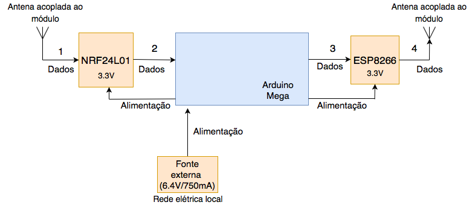

Diagrama de funcionamento da estação base
O módulo de recepção dos dados coletados pode ser melhor expresso pelo seguinte diagrama de blocos. Nele é possível observar todas as partes e passos que ocorrerão nesta estapa do projeto.
No passo 1, o módulo rádio/wifi receberá os dados providos da captura na estação remota. Desta forma, a informação será recebida por uma antena acoplada ao próprio módulo NRF24L01 que por sua vez está conectado a um Arduino Mega e sem alimentado por uma tensão necessária para seu funcionamento (3.3V). Com os dados recebidos, o módulo envia para o Arduino como demonstrado pelo passo 2.
O microcontrolador Arduino está sendo alimentado por uma fonte externa que fornece uma tensão de 6.4V e uma corrente máxima de 750mA. Essa fonte está conectada à uma rede elétrica local e devido a isso o usuário deve ter cautela ao usar uma fonte para a alimentação do componente, pois, caso a tensão da rede não seja compatível com a tensão de entrada da fonte pode ocorrer danos nos dispositivos utilizados. Assim, para a solução deste problema, é recomendável o uso de transformadores que possam fazer a conversão correta de tensão.
No Arduino será organizado todas as informações recebidas em uma estrutura de dados (estrutura ainda não definida, podendo variar ao decorrer do projeto), e na etapa 3 essa estrutura será enviada, por meio de um protocolo estabelecido previamente, para o módulo ESP8266 que estará conectado a uma rede de Internet local e no passo 4 ocorrerá o envio dos dados para a nuvem. O módulo ESP8266 está recebendo do microcontrolador uma tensão de 3.3V para o seu funcionamento.